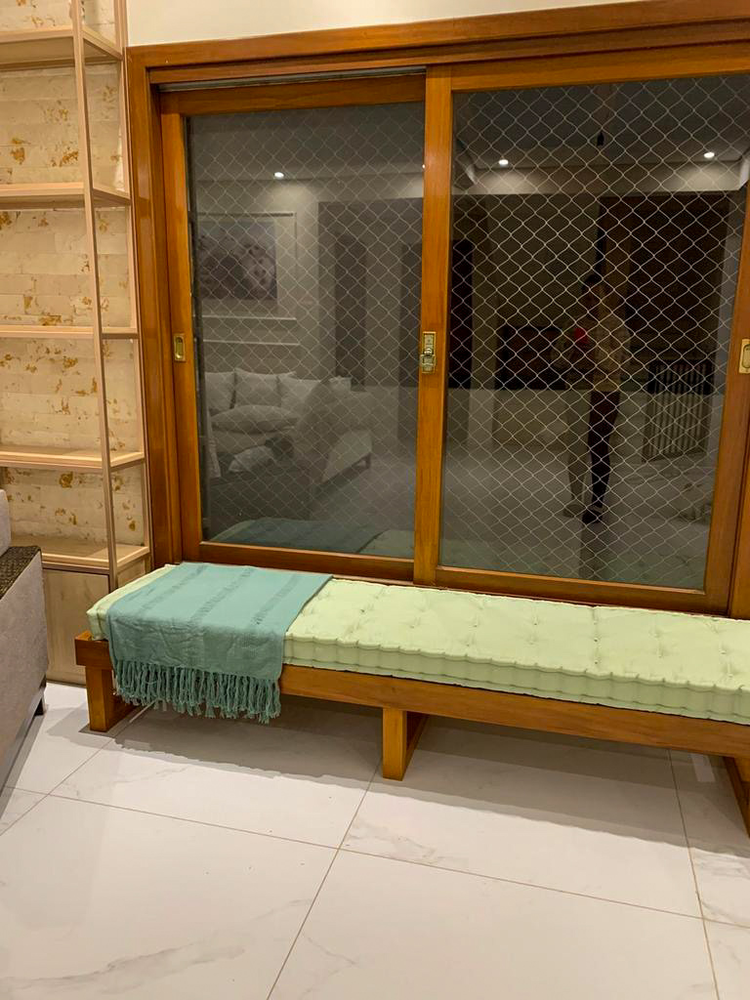
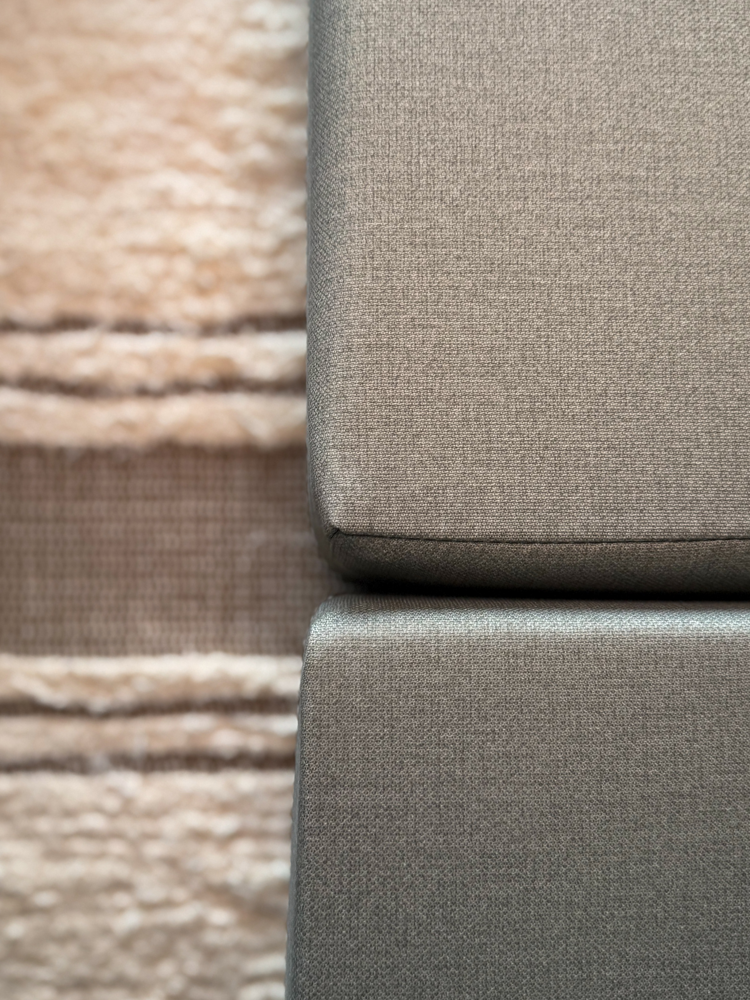

Há 5 anos
transformando espaços
CONFORTO PENSADO PARA O SEU ESPAÇO
Assentos, encostos e almofadas criados nas suas medidas, com orientação cuidadosa do tecido ao acabamento.
transformando espaços
cuidado em cada etapa
escolhas sem complicação
da nossa casa para a sua
NÃO É SÓ ESCOLHER UMA COR
Sol, chuva, pets, crianças, altura da base e frequência de uso mudam completamente o que funciona em um projeto.
Por isso, antes de produzir, nós ouvimos, analisamos e orientamos. O resultado é uma peça bonita, proporcional e feita para durar na realidade da sua casa.
Entenda nosso atendimento →FEITO PARA DIFERENTES ESPAÇOS
De um assento para a janela a um sofá completo no chão: as peças nascem do espaço disponível e do conforto que você imagina.

Modelos lisos, turcos ou com cordão vivo, feitos nas medidas exatas do seu banco, canto alemão ou base.
Opções firmes em espuma ou mais fofas em fibra, pensadas para completar o conforto do seu projeto.
Peças decorativas que amarram cores, texturas e proporções para deixar o ambiente realmente pronto.
DO PRIMEIRO CONTATO À ENTREGA
Você não precisa chegar sabendo qual espuma, modelo ou tecido escolher. Essa orientação faz parte do nosso trabalho.
Envie fotos, medidas e conte como o ambiente será usado.
Indicamos espessura, modelo, tecido e composição mais adequados.
Apresentamos as opções e ajustamos o projeto antes da confirmação.
Cada peça é confeccionada sob medida e preparada para seguir até você.

MADE IN MINAS
Somos uma marca mineira que acredita que conforto de verdade não vem pronto: ele é construído para cada espaço.
Há cinco anos, transformamos medidas, referências e necessidades reais em futons e almofadas com identidade. Produzimos cada pedido individualmente e acompanhamos as escolhas de perto — porque o que chega à sua casa também carrega um pouco da nossa.
ESCOLHAS MAIS SEGURAS
Tecidos que unem conforto, sofisticação e acabamentos que valorizam cada ambiente.
Tecidos com mais resistência, performance e praticidade para cada ambiente, seja ele coberto ou totalmente exposto..
Alternativas que unem praticidade, fácil limpeza e maior durabilidade para acompanhar a rotina da casa.
ANTES DE COMEÇAR
Se a sua dúvida não estiver aqui, conte seu projeto para a gente.
Preencha o formulário com seu nome, medidas aproximadas, ambiente de uso e CEP. Depois seguimos a conversa pelo WhatsApp.
Sim. A orientação faz parte do atendimento para que a peça combine com o uso, a rotina e o espaço disponível.
Produzimos sob medida a partir das informações do seu espaço e ajustamos o projeto antes da confirmação.
Sim. Os pedidos são preparados para envio nacional, da nossa casa para a sua.
VAMOS IMAGINAR JUNTOS?
Preencha o essencial para preparar uma mensagem de orçamento. Fotos e detalhes podem ser enviados na conversa pelo WhatsApp.